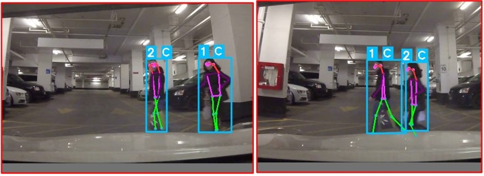

Pedestrian Intention Prediction


In this project, a deep learning based framework was implemented to predict and comprehend the pedestrian’s intention, consisting of the following components: detection, track- ing, pose estimation and prediction.
First, the pedestrian was detected and tracked using YOLOv5 and DeepSort on the dataset. Then, the pedestrian’s dynamical and con- textual information was extracted from the joint co- ordinates obtained using the OpenPose pose estimation algorithm. Following this, a LSTM Mechanism was implemented to predict the crossing intention of the pedestrian.